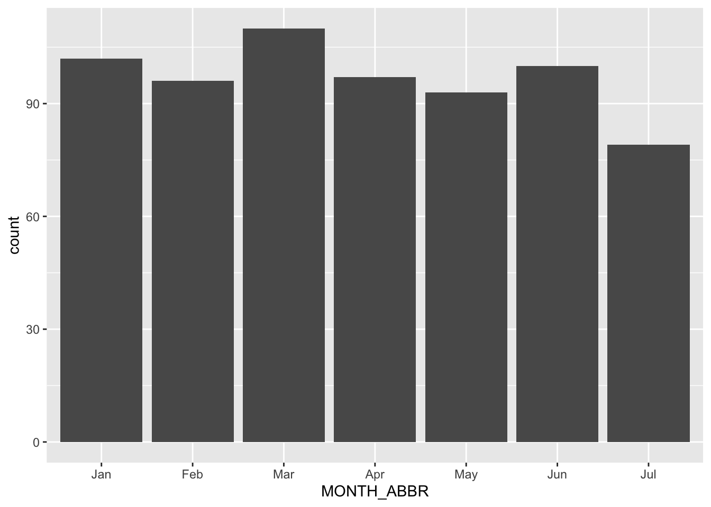

pacman::p_load(tidyverse, sf, tmap, httr)In-class Exercise 3b: Working with Open Government Data
1 Learning Outcome
By the end of this hands-on exercise, you will be able to: - Preparing ACRA (Accounting and Corporate Regulatory Authority) Information on Corporate Entities datasets downloaded from data.gov.sg portal for geocoding, - Geocoding the tidydata by using SLA OneMap API, - Converting the geocoded transaction data into sf point feature data.frame, and - Wrangling the sf point features to avoid overlapping point features.
2 Loading the R package
3 Importing ACRA data
folder_path <- "/Users/cktan/Desktop/SMU/01_Geospatial Analytics (ISSS626)/Hands-on_Ex/Take-home_Ex01/data/aspatial"
file_list <- list.files(path = folder_path,
pattern = "^ACRA*.*\\.csv$",
full.names = TRUE)
acra_data <- file_list %>%
map_dfr(read_csv)4 Saving ACRA data
write_rds(acra_data,
"/Users/cktan/Desktop/SMU/01_Geospatial Analytics (ISSS626)/Hands-on_Ex/Take-home_Ex01/data/rds/acra_data.rds")5 Tidying ACRA data
biz_56111 <- acra_data %>%
select(1:24) %>%
filter(primary_ssic_code == 56111) %>%
rename(date = registration_incorporation_date) %>%
mutate(date = as.Date(date),
YEAR = year(date),
MONTH_NUM = month(date),
MONTH_ABBR = month(date,
label = TRUE,
abbr = TRUE)) %>%
mutate(
postal_code = str_pad(postal_code,
width = 6, side = "left", pad = "0")) %>%
filter(YEAR == 2025) 6 Geocoding (It took 32 seconds to process the chunk of codes)
postcodes <- unique(biz_56111$postal_code)
url <- "https://onemap.gov.sg/api/common/elastic/search"
found <- data.frame()
not_found <- data.frame(postcode = character())
for (pc in postcodes) {
query <- list(
searchVal = pc,
returnGeom = "Y",
getAddrDetails = "Y",
pageNum = "1"
)
res <- GET(url, query = query)
json <- content(res)
if (json$found != 0) {
df <- as.data.frame(json$results, stringsAsFactors = FALSE)
df$input_postcode <- pc
found <- bind_rows(found, df)
} else {
not_found <- bind_rows(not_found, data.frame(postcode = pc))
}
}7 Tidying the geocoded data
found <- found %>%
select(1:10)8 Appending the location information
biz_56111 = biz_56111 %>%
left_join(found,
by = c('postal_code' = 'POSTAL'))9 Saving the data
write_rds(biz_56111, "/Users/cktan/Desktop/SMU/01_Geospatial Analytics (ISSS626)/Hands-on_Ex/Take-home_Ex01/data/rds/biz_56111.rds")10 Converting into SF data frame
biz_56111_sf <- st_as_sf(biz_56111,
coords = c("X","Y"),
crs=3414) 11 Visualising the distribution
ggplot(data = biz_56111,
aes(x = MONTH_ABBR)) +
geom_bar()